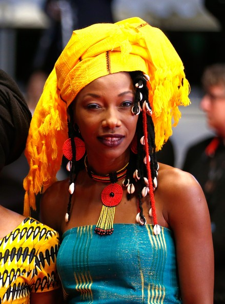
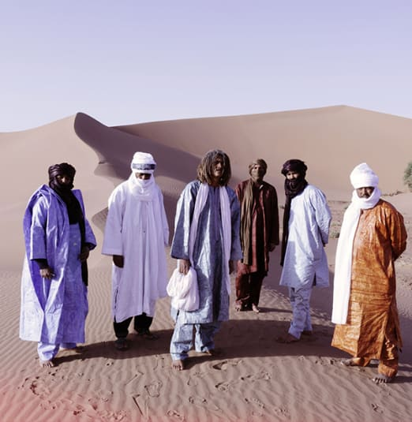

|
Tiff-featured ‘Mali Blues’ does justice to this generation of Africans, says singer By Peter Uduehi
Mali singer and actress Fatoumata Diawara says she’s excited by a renewed spirit of hope among the country’s youths following years of terror by Jihadist rebels who shot their way to power in the north. Commenting on the recent Toronto International Film Festival-featured documentary “Mali Blues”, Diawara says the film is an attestation that Mali’s youths were always on the right side of history as they chart their social aspirations in music, literature, painting, and other forms of art. The singer, whose personal story featured prominently in the German Lutz Gregor-directed documentary, told the African World there’s a “new awareness in the country to fight Islamic fundamentalism because it is unimaginable to say to an African that he or she should be banned from playing and listening to music. “How can you tell an African to stay away from music?” the singer asked, stressing that “music to an African is like oxygen to the human lung.” Mali is one of Africa’s biggest contributors to the continent’s primal reputation as the citadel of modern music as well as the influential “five notes”, an artform responsible for much of syncopating heart-beat sound of music worldwide. It’s in the beat of jazz, pop, R&B, salsa, rock, and other modern genres. Prominent Mali musicians, accused of anti-Islamic lyrics and moral decadence by the rebel Islamist group Ansar-dine, took to their heels as many fled the country in 2014 for fear of their lives. African traditional music, the mainstay of the country’s social life and economy, was banned by the terrorist group in the areas of the country they had seized. In the ancient city of Timbuktu, Christian churches were burned and libraries and museums containing relics of important medieval African institutions and kingdoms (considered United Nations protected world heritage sites) were also put in jeopardy. But West African troops, with the help of the French army, flushed out the rebels and today do not present the kind of threat they once did. Gregor agrees Mali Blues reinforces many positive things about the true nature of the proverbial “African Personality”, a request first moved by Dr Kwame Nkrumah of Ghana in post-colonial Africa promoting self-awareness, self-reliance, equanimity, and resilience qualities. “If you take a look at the rapper Master Soumy, his role in the documentary is instructive that young people in Africa are in steady control of their social life,” he explained, noting that “Master Soumy is like many youngsters who refuse to be brainwashed and are doing something great to assert themselves against a religious sect that is ruining their country.” Scenes of Soumy playing to different audiences capture his ebullient rap lyrics and sonorously and vociferously asking: “why do the Islamists use torture, deceit, lies fake religious tenets, and Kalashnikov rifles to force people to convert to Islam?” Peppering them with enraging rhymes, Master Soumy digs in and taunts and challenges the terrorists to “Explain your Islam”. “This is powerful,” says Gregor, adding that “Mali’s youths are vibrant, determined and often positive people who want something good to happen in their country. Himself a grandfather of an African mixed child of Nigerian (as in the country Niger just north of Nigeria) and German descent, Gregor says there are great things happening in Africa that he wants every Westerner to know about, noting that “African people are too often not shown in the proper light by western media. “I have been to Mali more than ten times and I love going back to Africa to find the positive stories, and they are many,” he said. One positive story has to do with what some are doing to wage war against female circumcision (or female genital mutilation — FGM). In the documentary, Diawara sings for her womenfolk at a gathering and while still captivated by her homecoming as she recants her brief exile in Europe, the raptured women are admonished by the singer to stop allowing men and elders in society to force them to circumcise their daughters and granddaughters saying “circumcision damages the morale of girls” and opens them up to emotional trauma and diseases. A rebel of sorts, Diawara ran away from her parents in Mali at 18 after she refused an arranged marriage to a handpicked cousin. She went into exile in France returning six years later to yet another social wrinkle, the exigencies of Muslim fundamentalists and terror groups who seized large swathes of the country banning musicians and artists and targeting them as decadent and immoral people who must be eliminated. Gregor says Mali Blues itself is, in a lot of ways, a “celebration of Diawara’s homecoming after her exile”.
|
 |
Tinariwen Interview: The band responded to questions posed via email by our editors recently. Because English is not its first language, some of the answers here have been edited for clarity. Continue reading:
The band was formed in 78, during a long period of exile for these young people ! All are still based in Azawad, north part of Mali.
We used to be on tour a lot and [lived] in occidental countries but [we] always [go back home to Mali from time to time].
[About six years ago].
Of course! [However, we don’t play music to challenge any movement!] We are [constantly] singing for peace, [and it’s one sure way to build a better future].
This is [symptomatic of the crazy world we live in today. These terrorists in Mali] are completely crazy but we [think they are just misfits].
Actually we [don’t] plan to play in Mali [for now] as the situation [there] is [not safe]. It is too risky and to do [shows there].
Our style is "Assouf", the expression of strong sentiments; [it is nostalgic for us to do this music away from home, and to talk to the world about our traditions. It brings to us a lot of sentimental value as Tuareg people. We are constantly inspired by the environment we came from in Africa and this is clearly in our style of music. This is the music of our ancestors! As you know, African music is huge as there are many cultures and traditions in Africa]. This is the beauty of [Africa’s diversity].
Of course, the kora is a big symbol from the Manding Empire ! We love this instrument but we never practised ! We know very well Toumani Diabate and it is always a big pleasure to meet him!
[No…]
We diffuse many messages in our poetry, each one could find what he could wish to understand! The poetry are always a way to open your imagination! We are speaking a lot about our situation and it’s essential for us! Also we [represent through our music those who want peace at home]. [The world can also find strength in the peaceful messages in our lyrics because the problems of mankind are similar worldwide. We sing about things as simple as “freedom].
Deserts ! |